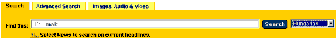

| A META elemek használata |
|
A META elemek egyik felhasználása az, amikor a keresõrendszereknek adunk információkat. Ugyanis a WWW-en mûködõ legtöbb keresõrendszer már felhasználja a <META> tagban definiált információkat. Ez azért jó, mert oldalainkat nagyobb eséllyel találják meg azok, akik valamilyen téma, vagy kulcsszó szerint keresnek a Weben. A <META> taget a dokumentum elején a <HEAD> és </HEAD> tagek közé érdemes elhelyezni. A következõ információkat adhatjuk meg: Szerzõ (author): a dokumentum szerzõjének neve pl. Szerzõi jogok (Copyright) Az adott oldalra vonatkozó szerzõi jogokat írhatjuk le a segítségével. <META NAME="copyright"
CONTENT="Csak oktatási célra tölthetõ le az oldal"> Jellemzés (description) Az adott oldal témáját itt részletesen kifejthetjük. Használata: <META NAME="description" CONTENT="Az oldal az
empiriokriticizmus eszmerendszerével foglalkozik."> Kulcsszavak (keywords): olyan szavak, amelyek jól jellemzik oldalainkat. Pl. jelen esetben Az is elõfordulhat, hogy a kulcsszavakat más nyelveken is meg szeretnénk adni. Ehhez a LANG paramétert kell használnunk, amivel megadhatjuk a keresõnek, hogy az ott megadott kulcsszó milyen nyelvre vonatkozik. Ezután - a következõ példa szerint - mind a magyar, mind az angol nyelven keresõk jó eséllyel meg fognak találni minket. Ehhez persze az általuk beállított nyelvnek meg kell egyeznie azzal, amit mi adtunk meg a kulcsszavaknál. pl. Ekkor ha pl. az altavistan keresünk arra szóra, hogy "filmek", akkor a Search gomb lenyomása elõtt állítsuk be a magyar nyelvet. (Hungarian)  A <META> elemekkel a fentieken kívül más funkciókat is megvalósíthatunk. Automatikus oldal betöltés (Refresh) pl. Ez a kód azt eredményezi, hogy az általunk megadott idõ (másodperc) után - ami a fenti példában 5 - az ablakba betöltõdik a megadott oldal. (http://valerie.inf.elte.hu/) (Ezt a funkciót nem mindegyik böngészõ támogatja, ezért lehetõvé kell tenni, hogy a megadott oldalra egy linken keresztül is el lehessen jutni.) pl. az alábbi kód eredményét a refresh.html oldalon ellenõrízhetitek. <HTML> Az oldal érvényességi idejének megadása <META HTTP-EQUIV="Expires"
content="Wed, 2 Dec 1999 12:45 GMT"> Karakterkészlet beállítása Az alábbi paraméterek segítségével adhatjuk meg a böngészõnek, hogy milyen karakterkészlet szerint jelenítse meg az oldalunkat. A magyar ékezetes betûk megjelenítéséhez az alábbi kódolásokat választhatjuk ki: <META HTTP-EQUIV="Content-Type"
CONTENT="text/html; charset=windows-1250"> <META HTTP-EQUIV="Content-Type" CONTENT="text/html; charset=iso-8859-2"> Cache control A Cache control opció arra lenne jó, hogy a böngészõ ne az ideiglenes tárolóból (cache) töltse be az (esetleg régebbi adatokat tartalmazó) oldalunkat. A feltételes módot azért alkalmaztam, mert sajnos a böngészõk többsége figyelmen kívül hagyja. Használata: <META
HTTP-EQUIV="Cache-control" CONTENT="no-cache"> Robotok (robots) Ez a META TAG kontrolálja a web robotok viselkedését. pl. <META NAME="ROBOTS" CONTENT="FOLLOW,
NOINDEX"> A META tagek oldalunkba illesztésénél megkönnyíti a dolgunkat a Teleport Online Meta Tag Generáló. (Forrás: Web-Garázs)
|
|